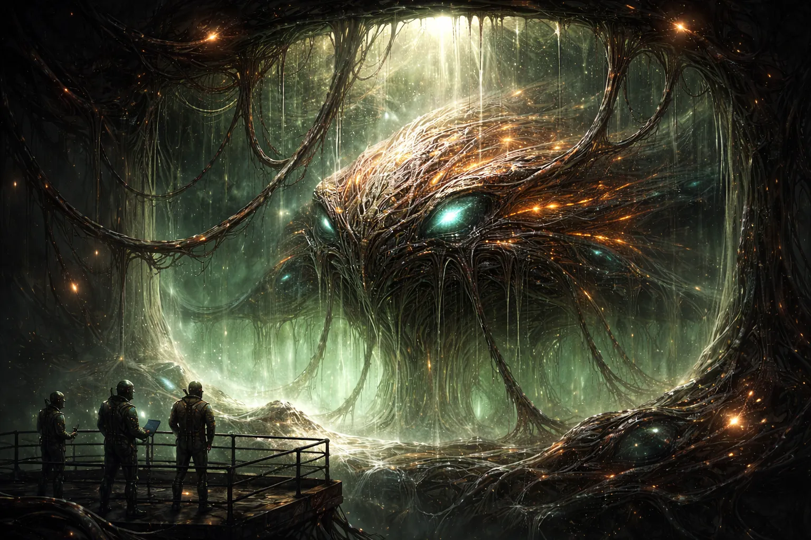
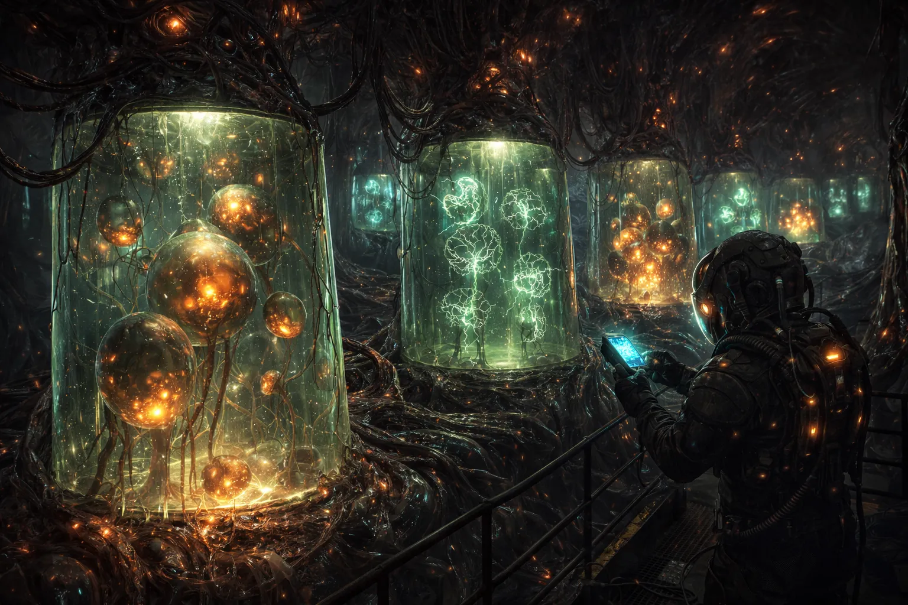
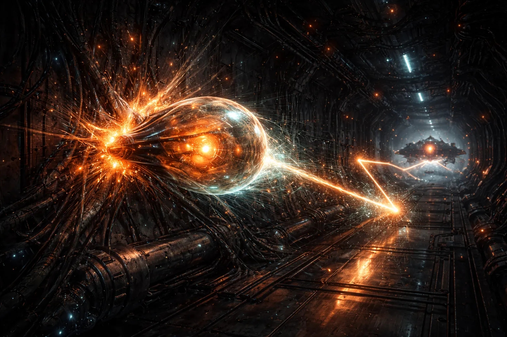
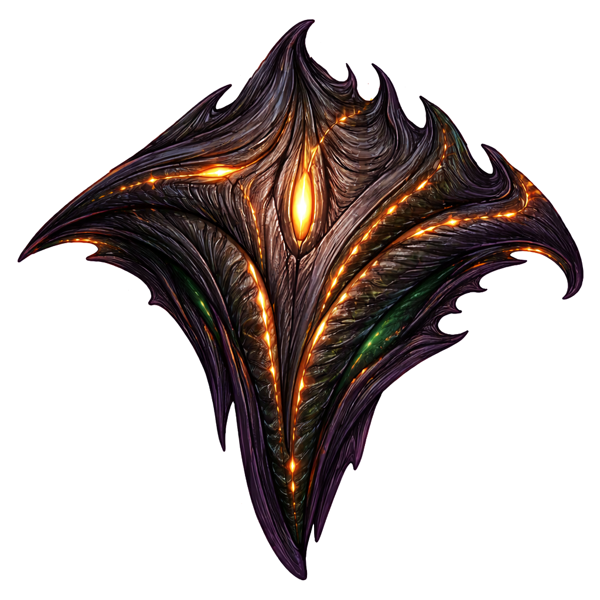
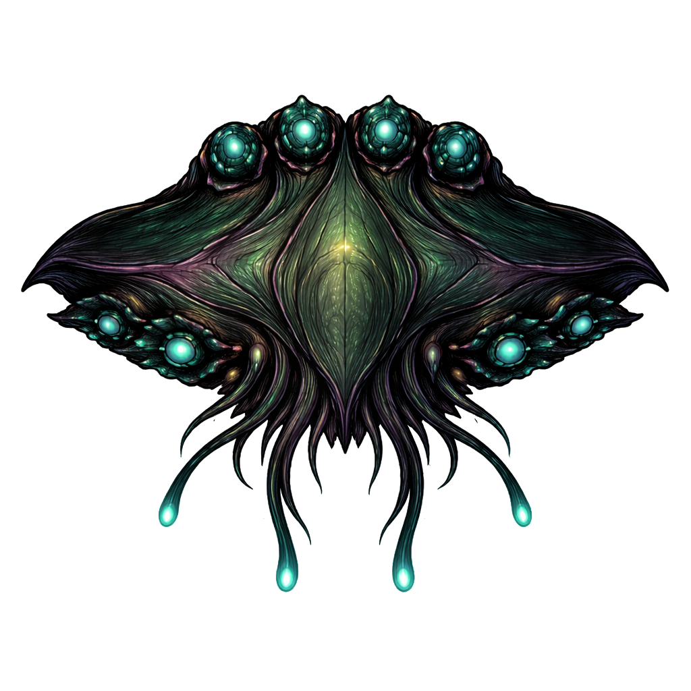
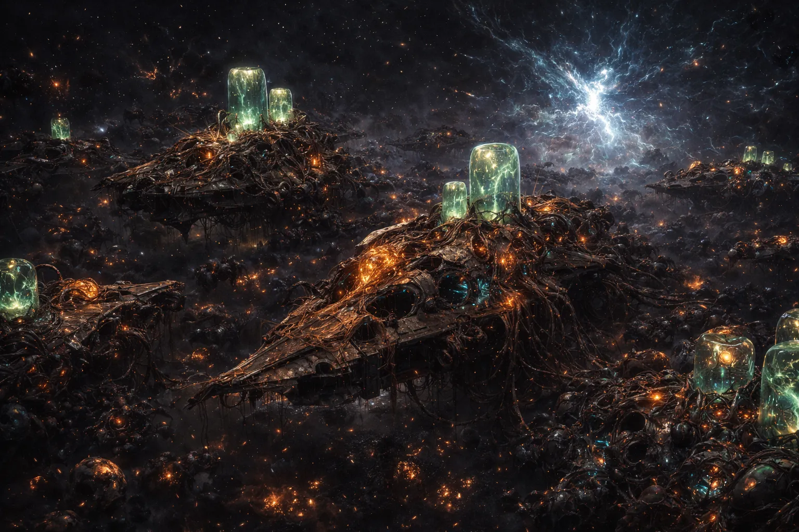
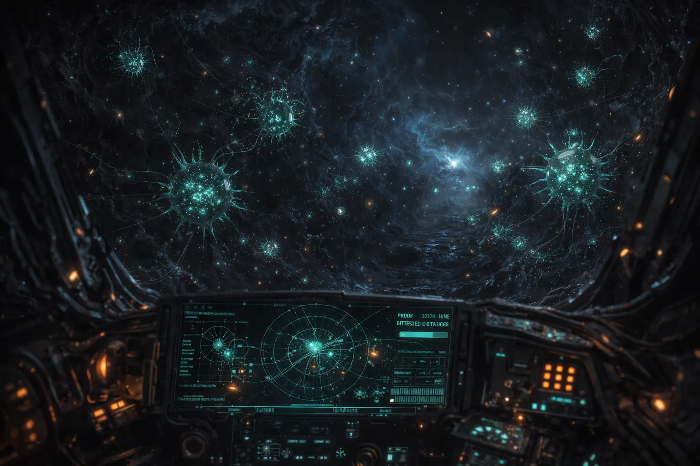
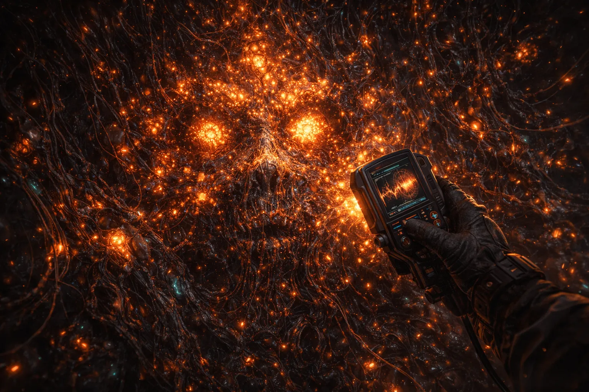

THE CHOIR
They didn't build ships. They grew them. In vats, from tissue, following genetic programs written by a civilization that no longer exists.
Something is still running.
At the center of every known Choir production site stands a structure the Compact designates a "neural mass." Pilots call them trees. Trunk-like columns of neural tissue, floor to ceiling, with thousands of tendrils reaching out to every growth vat in the facility.
The hull isn't a structure — it's a fruiting body. The real organism is the mycelial network threading through the facility walls, floor to ceiling, invisible until you cut into the substrate and find it everywhere.
They metabolize nutrients. They respond to stimuli. They regulate production cycles across hundreds of connected vats. Whether any of this constitutes awareness is a question the Compact has been carefully not answering for decades.
Dr. Kael Vasik's team at Site 7 noticed that the light patterns on the trunk surface changed when people entered the room. Not when instruments were brought in. When people entered. The patterns returned to baseline when the room emptied. Different researchers produced different patterns. Consistent patterns, visit after visit, for the same person.
Vasik's paper was accepted, peer-reviewed, and quietly reclassified.
Day four. I walked in and the pattern changed before I crossed the sensor line. Same pattern it showed me on day one. I checked the logs. It showed a different pattern for Okafor on day two. A different one for Metz on day three. Consistent. Specific. I don't know what to call that.
Site 7 requisitioned twelve Tempest hulls. The vats produced fourteen. Two weeks later, two Tempests were lost in corridor 9-Kappa. Requisition was updated to fourteen.
From the Vat
A Choir ship starts as a genetic template transmitted from the neural tree to a growth vat. The vat fills with nutrient fluid — it smells like cut grass and copper, though technicians stop noticing after the first week. Over eleven days, the ship assembles itself: hull membrane first, then internal structure, propulsion organs, weapons systems. Layer by layer, like an embryo following a developmental program.
The process runs on its own. Technicians learned early that it doesn't welcome help. Any attempt to modify a ship mid-growth causes the vat to seal its nutrient channels, pause, and restart the template from scratch. The process has opinions about how it should go.
When the ship is complete, the umbilical tendrils release. The hull hardens in vacuum. Bioluminescent veins flicker on. Experienced pilots say the ship's systems come online in a specific sequence, always the same, and that the sequence looks a lot like something waking up.

There's a sound when the hull seals. Not mechanical. The old crews called it "the gasp." New crews don't call it anything. Everyone remembers the first time they hear it.
Eleven days. No rivets. No welds. The Foundry builds a Viper in nine and considers it a miracle of engineering.
The ammunition is alive.
Choir munitions are organisms. The bouncing bombs have casings made of muscle tissue that contracts on impact, redirecting kinetic energy into a new trajectory. The proximity mines have rudimentary nervous systems. They don't detect energy signatures or radar pings. They sense mass displacement the way a spider senses vibration in a web.
Each munition type grows in specialized vats fed by the same neural tree. Production never stops. Spent munitions decompose within hours, breaking down into compounds the vats reabsorb for the next batch.
Compact weapons inspectors have tried to classify Choir munitions for thirty years. The forms require a distinction between "weapon" and "organism" that the munitions refuse to respect.

The bouncing bomb is the signature Choir weapon. On contact with a wall, the casing contracts and launches itself into a new trajectory. Compact researchers have measured bounce efficiency at 94%, which shouldn't be possible unless the membrane is burning metabolic reserves to add energy on each impact. The bombs get hungrier as they bounce.
In a tight corridor, one bomb can ricochet six or seven times before detonating. Foundry pilots call this "the pinball problem." It's the main reason experienced pilots avoid narrow passages when a Tempest is in the area.

Two templates. Two philosophies.
The Choir neural trees produce exactly two ship templates. No variants have been observed. No customization is possible. Pilots fly what the tree grows, or they don't fly Choir at all.


Compact Training Academy runs a simulation called "Empty Corridor." Foundry cadets clear it in ninety seconds. Lattice cadets fortify and hold. Choir cadets take eleven minutes and leave the corridor unusable for the next three classes.
The casing is muscle. The mines have nerves. The ships heal. Call it engineering if you want.
Nothing is wasted.
Destroyed Choir ships don't leave wreckage. They leave remains. The organic hull decomposes within minutes. Near production sites, nutrient tendrils reach out from the facility and draw the material back into the growth cycle. The dead ship becomes the next ship.
Before a hull is lost entirely, the same biology tries to save it. Hull repair mid-flight works through anastomosis — hyphal fusion, the broken edges reaching toward each other and reconnecting. The repaired section is denser than the original.
Far from any production site, the decomposition goes differently. Small organisms appear in the remains. They consume the wreckage and produce structures that resemble miniature growth vats. Too small to build anything useful. Too organized to be accidental. The genetic template seems to be trying to seed a new production facility from whatever's left of a single ship.
The Compact monitors 23 such sites. None have progressed past the initial stage. None have stopped.

The corridor is the weapon.
Foundry and Lattice pilots are trained to engage targets. Choir pilots are trained to prepare rooms. A Lurker entering a corridor evaluates surfaces, distances, traffic patterns. Then it starts seeding.
Lurker mines are spaced so their nervous systems overlap. The mines use quorum sensing — they coordinate when population density reaches a threshold, like bacteria that don't attack until there are enough to overwhelm the immune response. Trigger one and it sends a stress signal through the network. The rest wake up together. Experienced Lurker pilots talk about their minefields the way engineers talk about circuit layouts: you place each node, you check the coverage, you wait for the signal.
Tempest pilots don't wait for anything. Bouncing bombs into a contested corridor deny it to everyone, allies included. The burst spray at close range turns a fight into a coin flip, except the Tempest's hull regenerates and yours doesn't.

A Lurker was here. You know this because you are currently on fire.
Maintenance schedule for Site 7-Choir: none. The facility maintains itself. Budget allocation: none. The facility was never budgeted for. It simply runs.
Is the Choir still alive?
The neural trees have been running continuously since before the Collapse. They maintain their own nutrient supply. They adjust output based on demand. And on at least one occasion, a tree at Site 12-Choir modified a ship template in a way that doesn't appear in any recovered pre-Collapse genetic archive.
The change was small. A 3% increase in hull membrane elasticity on Tempest-class vessels. It appeared after a string of engagements where several Tempests were destroyed by their own ricocheting bombs. The updated membrane reduced self-damage.
A tree noticed its ships were dying a specific way and changed the blueprint.
The Compact's official position: "autonomous template optimization within pre-programmed parameters." Dr. Vasik's response, found in his personal files after his reassignment:
"No."
